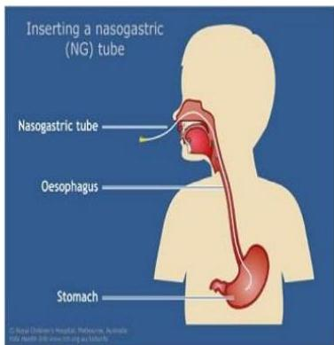

🥣
Topic 11
Nasal Gastric Tube Feeding
01
Definition & Purpose
Definition: The process of directly delivering nutrients through the nostrils using a nasal gastric tube (bypassing the mouth). This is only indicated for patients with a functional gastrointestinal system.

Primary Goal
To improve and maintain the patient's nutritional status when oral intake is impossible or insufficient.
02
Indications
- Patients with esophageal obstruction.
- Patients with decreased consciousness who cannot feed orally.
- Adjunctive therapy for severe malnutrition.
- Premature infants with inadequate sucking reflexes.
03
Pre-feeding Assessment
- Check Formula: Verify type, amount, frequency, and expiry date.
- Positioning: Assist the client into Fowler's position to prevent aspiration.
- Residual Check: Aspirate stomach contents to check for pH (confirm placement) and residual volume.
- Residual Rule: If more than 100 ml is aspirated, withhold feeds or follow institutional protocol.
04
Implementation Highlights
| Steps | Rationale |
|---|---|
| Warm the feed to room temperature. | Cold feeds can cause abdominal cramps. |
| Aspirate and measure gastric residual. | To evaluate absorption of the previous feed. |
| Pinch or clamp the tube while connecting the syringe. | Prevents excess air from entering the stomach and causing distention. |
| Allow feed to flow slowly by gravity. | Rapid feeding can cause flatus, pain, or reflux vomiting. |
| Flush the tube with 50-100ml of water after feeding. | Clears the tube of formula to prevent blockage. |
05
Evaluation & Monitoring
Monitor the patient for:
- Signs of dehydration.
- Tolerance (nausea, fullness, regurgitation).
- Weight gain or loss.
- Fecal elimination patterns (diarrhea, constipation).
Knowledge Check
Test Your Understanding
Complete this quiz to assess your comprehension of NGT Feeding.
Loading quiz...